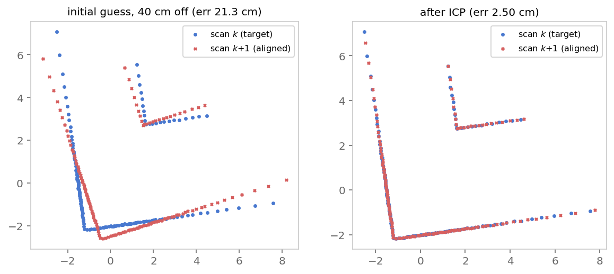
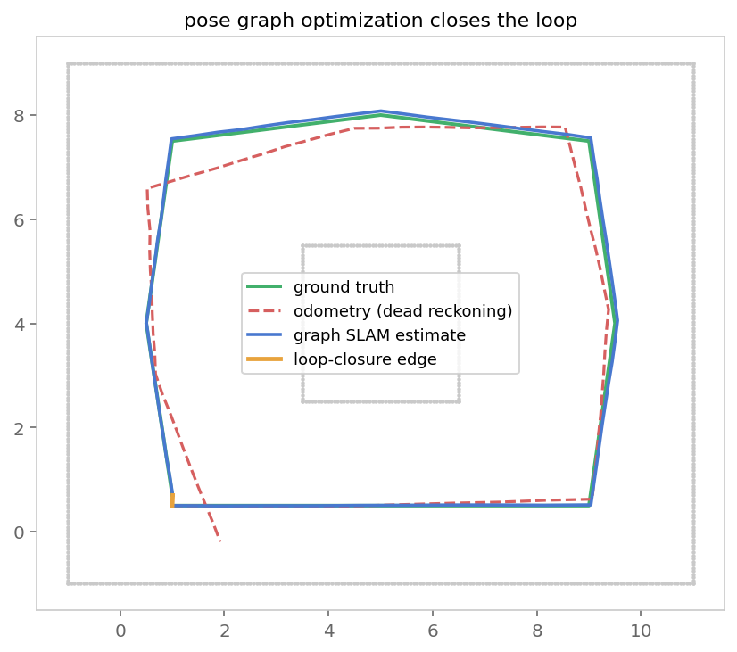
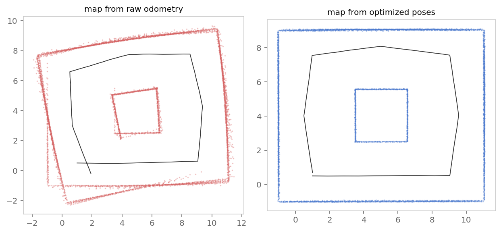
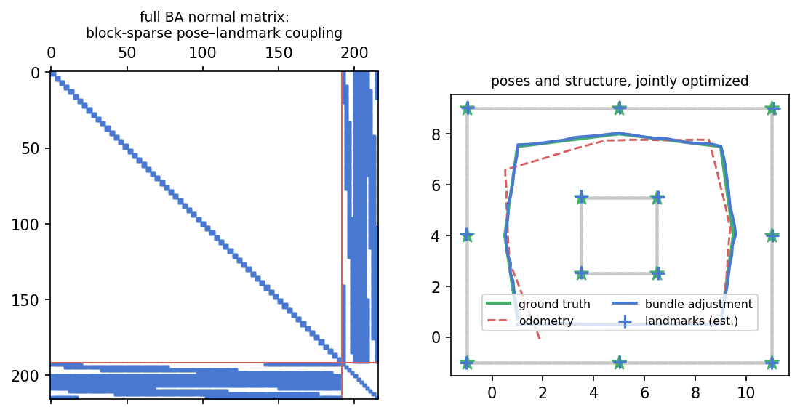

Graph SLAM, iSAM, bundle adjustment & structure from motion
A robot that trusts only its wheel odometry drifts: every small error in a relative motion estimate is integrated forever. Graph SLAM instead estimates many poses jointly from retained constraints. A batch solver can re-optimize the trajectory when a new constraint arrives; incremental solvers such as iSAM2 update affected Bayes-tree cliques and often avoid a full rebuild.
This page is an executed-notebook walkthrough. Every numbered In [n] cell below was
executed, and the printed outputs and figures are the real results. We build the entire
pipeline from scratch with numpy only — simulated lidar, ICP scan matching, pose-graph
construction, loop closure, and batch Gauss–Newton optimization. That is Part I.
Part II explains how iSAM and iSAM2 reuse that work as the graph grows,
with a current GTSAM reference snippet. Part III then lets the structure into the optimization —
bundle adjustment, run on the same world with the lidar swapped for a bearing-only
“camera” — Part IV widens to structure from motion, and Part V lines the
three estimation problems up side by side.
Scope of the demo
- Faithful: the $SE(2)$ residuals and Jacobians, gauge fixing, normal-equation assembly, joint pose–landmark optimization, and Schur complement are the real algorithms.
- Simplified: scans and bearings are simulated; the loop candidate and landmark identities are supplied; information matrices are illustrative hand-tuned weights; and the solvers omit robust losses. Production SLAM must estimate all of these and reject outliers.
A widely used implementation. g2o (General Graph Optimization, Kümmerle et al., ICRA 2011) is an influential C++ graph-optimization back-end. The official g2o README links to g2o-python (pip install g2o-python), a separately maintained wrapper around g2o's experimentalpymemPython branch. There is also the older community binding g2opy. There is also a pure-Python solver, python-graphslam (pip install graphslam), which reads the same.g2ofiles. Both APIs are shown later as reference snippets; the NumPy cells are the executed demo.
A typical pose-graph pipeline
- Odometry (prediction): chain relative motion estimates → an initial guess that drifts.
- Scan matching (ICP): align overlapping lidar scans → relative-pose measurements.
- Graph construction: poses become nodes; each measurement becomes an edge with an information matrix.
- Loop closure: recognize a previously visited place, verify it geometrically, and add a long-range edge.
- Optimization (back-end): nonlinear least squares over all poses — the loop snaps shut, drift is redistributed.
Formally, with poses $\mathbf{x} = (\mathbf{x}_1,\dots,\mathbf{x}_n)$ and measured relative poses $\mathbf{z}_{ij}$ with information matrices $\Omega_{ij}$, graph SLAM solves
$$\mathbf{x}^\star \;=\; \arg\min_{\mathbf{x}} \sum_{(i,j)\in\mathcal{E}} \mathbf{e}_{ij}(\mathbf{x}_i,\mathbf{x}_j)^{\!\top}\, \Omega_{ij}\, \mathbf{e}_{ij}(\mathbf{x}_i,\mathbf{x}_j), \qquad \mathbf{e}_{ij} = \mathrm{t2v}\!\left(Z_{ij}^{-1}\,\big(X_i^{-1} X_j\big)\right),$$
i.e. the error of an edge is the mismatch between the predicted relative pose $X_i^{-1}X_j$ and the measured one $Z_{ij}$. The front-end (steps 1–4) builds this graph; the back-end (step 5) solves it.
Part I · SetupSE(2) in five functions
A 2-D pose $[x, y, \theta]$ is a rigid transform. Everything in graph SLAM is composing and
inverting these, so we define the classic helpers: v2t/t2v convert between
the vector and the $3{\times}3$ homogeneous-matrix form, oplus composes a pose with a
relative motion, and ominus gives the relative pose between two poses.
import numpy as np
def v2t(v):
"""Pose vector [x, y, theta] -> 3x3 homogeneous transform."""
x, y, th = v
c, s = np.cos(th), np.sin(th)
return np.array([[c, -s, x], [s, c, y], [0, 0, 1.0]])
def t2v(T):
return np.array([T[0, 2], T[1, 2], np.arctan2(T[1, 0], T[0, 0])])
def ominus(a, b):
"""Relative pose of b in the frame of a."""
return t2v(np.linalg.inv(v2t(a)) @ v2t(b))
def oplus(a, d):
"""Compose pose a with relative motion d."""
return t2v(v2t(a) @ v2t(d))
def wrap(th):
return (th + np.pi) % (2 * np.pi) - np.piStep 1Odometry — the drifting initial guess
We simulate a robot driving one loop around a block inside a rectangular room, taking a
lidar scan (a point cloud in its own frame) at each of 64 poses. Its wheel odometry reports
each relative motion corrupted by noise plus a small bias — the realistic part, because
biased heading error is what makes dead reckoning bend away from the truth. Chaining
(oplus-ing) the noisy increments gives the dead-reckoned trajectory: our initial
guess, and nothing more.
rng = np.random.default_rng(42)
# room walls + an inner block, as dense point sets
def wall(p0, p1, step=0.06):
p0, p1 = np.asarray(p0, float), np.asarray(p1, float)
n = max(int(np.linalg.norm(p1 - p0) / step), 2)
return p0 + np.linspace(0, 1, n)[:, None] * (p1 - p0)
WORLD = np.vstack([
wall([-1, -1], [11, -1]), wall([11, -1], [11, 9]),
wall([11, 9], [-1, 9]), wall([-1, 9], [-1, -1]),
wall([3.5, 2.5], [6.5, 2.5]), wall([6.5, 2.5], [6.5, 5.5]),
wall([6.5, 5.5], [3.5, 5.5]), wall([3.5, 5.5], [3.5, 2.5]),
])
def simulate_scan(pose, n_beams=180, max_range=8.0, noise=0.01):
"""Lidar point cloud in the robot frame (crude ray sim)."""
Tinv = np.linalg.inv(v2t(pose))
pts = (Tinv @ np.hstack([WORLD, np.ones((len(WORLD), 1))]).T).T[:, :2]
pts = pts[np.linalg.norm(pts, axis=1) < max_range]
pts = pts + rng.normal(0, noise, pts.shape)
ang = np.arctan2(pts[:, 1], pts[:, 0]) # thin to ~n_beams
bins = np.digitize(ang, np.linspace(-np.pi, np.pi, n_beams))
keep = [np.where(bins == b)[0][np.argmin(np.linalg.norm(pts[bins == b], axis=1))]
for b in np.unique(bins)]
return pts[np.array(keep)]
# ground-truth loop: 64 poses through 8 waypoints, ending near the start
waypoints = np.array([[1.0, 0.5], [9.0, 0.5], [9.5, 4.0], [9.0, 7.5],
[5.0, 8.0], [1.0, 7.5], [0.5, 4.0], [1.0, 0.7]])
true_poses = []
for a, b in zip(waypoints[:-1], waypoints[1:]):
for t in np.linspace(0, 1, 9, endpoint=False):
true_poses.append([*(a + t * (b - a)), np.arctan2(*(b - a)[::-1])])
true_poses.append([*waypoints[-1], np.arctan2(*(waypoints[0] - waypoints[-1])[::-1])])
true_poses = np.array(true_poses)
N = len(true_poses)
# noisy, biased odometry -> dead-reckoned trajectory
odom_meas = []
for i in range(N - 1):
d = ominus(true_poses[i], true_poses[i + 1])
d += [rng.normal(0, 0.015) + 0.008, # forward noise + bias
rng.normal(0, 0.01),
rng.normal(0, 0.006) + 0.004] # heading drift
odom_meas.append(d)
odom_poses = [true_poses[0].copy()]
for d in odom_meas:
odom_poses.append(oplus(odom_poses[-1], d))
odom_poses = np.array(odom_poses)
scans = [simulate_scan(p) for p in true_poses]
print(f"simulated {N} poses, scan sizes ~{np.mean([len(s) for s in scans]):.0f} pts")
print("final drift (odometry vs truth):", np.round(odom_poses[-1] - true_poses[-1], 3))simulated 64 poses, scan sizes ~154 pts final drift (odometry vs truth): [ 0.922 -0.895 0.241]
After one lap the dead-reckoned pose is off by almost a metre in each direction and 14° in heading — and the robot has no idea.
Step 2Scan matching — ICP
Odometry says “I think I moved this much”; scan matching checks that claim against overlapping geometry. If two scans have enough non-degenerate overlap and the data association is correct, the transform that aligns them estimates the relative pose between the viewpoints. Depending on the scene and sensors this can improve on wheel odometry, but repetitive geometry, moving objects, or a poor initial guess can also make it fail.
The classic algorithm is ICP (Iterative Closest Point, Besl & McKay 1992). It alternates two steps until the alignment stops improving:
- Correspond: transform the source scan by the current guess $T$ and pair every point with its nearest neighbour in the target scan (rejecting the worst pairs as outliers);
- Align: solve $\;\min_{R, t} \sum_k \lVert R\,\mathbf{p}_k + \mathbf{t} - \mathbf{q}_{\mathrm{nn}(k)} \rVert^2$ in closed form via SVD (the Kabsch solution: cross-covariance of the centered point sets), and fold the correction into $T$.
Because the correspondences are only guesses, ICP needs a decent initial transform — which is exactly the role odometry plays. This division of labour repeats at every level of SLAM: a cheap prediction seeds an accurate refinement.
def icp(source, target, T0=np.eye(3), max_iter=30, tol=1e-6):
"""Point-to-point ICP: find T aligning source -> target. Returns (T, errs)."""
T = T0.copy()
src_h = np.hstack([source, np.ones((len(source), 1))])
errs = []
for _ in range(max_iter):
moved = (T @ src_h.T).T[:, :2]
# 1. correspond: nearest neighbour in the target for every source point
d2 = ((moved[:, None, :] - target[None, :, :]) ** 2).sum(-1)
nn = d2.argmin(1)
dist = np.sqrt(d2[np.arange(len(moved)), nn])
m = dist < np.percentile(dist, 80) # reject worst matches
P, Q = moved[m], target[nn][m]
errs.append(float(dist[m].mean()))
# 2. align: closed-form best rigid transform (SVD / Kabsch)
Pc, Qc = P - P.mean(0), Q - Q.mean(0)
U, _, Vt = np.linalg.svd(Pc.T @ Qc)
R = Vt.T @ np.diag([1, np.sign(np.linalg.det(Vt.T @ U.T))]) @ U.T
t = Q.mean(0) - R @ P.mean(0)
dT = np.eye(3); dT[:2, :2] = R; dT[:2, 2] = t
T = dT @ T
if len(errs) > 1 and abs(errs[-2] - errs[-1]) < tol:
break
return T, errsTo see the correction clearly, match scan 10 against scan 9 but pretend the odometry guess is poor — as after a wheel slip — 40 cm and 9° off:
i = 9
bad_guess = odom_meas[i] + np.array([0.35, -0.20, 0.16]) # simulated wheel slip
T_icp, errs = icp(scans[i + 1], scans[i], T0=v2t(bad_guess))
print("bad initial guess:", np.round(bad_guess, 4))
print("ICP estimate :", np.round(t2v(T_icp), 4))
print("ground truth :", np.round(ominus(true_poses[i], true_poses[i + 1]), 4))
print(f"converged in {len(errs)} iterations, "
f"mean residual {errs[0]*100:.1f} cm -> {errs[-1]*100:.2f} cm")bad initial guess: [ 0.7563 -0.1959 0.1666] ICP estimate : [ 0.3957 -0.0006 -0.0013] ground truth : [ 0.3928 0. -0. ] converged in 25 iterations, mean residual 21.3 cm -> 2.50 cm

ICP recovers the true relative motion to a few millimetres despite the bad seed. From here on, whenever we need the relative pose between two overlapping scans, we ask ICP — seeded by whatever estimate we currently have.
Step 3Build the pose graph
Each edge stores three things:
- the pair of poses $(i, j)$ it constrains,
- the measured relative pose $\mathbf{z}_{ij}$ — here, ICP refinements of the odometry between consecutive scans,
- an information matrix $\Omega_{ij}$ (inverse covariance) saying how much to trust the measurement and how its components correlate. Here we use simple diagonal weights; a production system should estimate uncertainty from the registration geometry or calibrate it empirically.
The node values themselves are initialized from dead reckoning — wrong, but a good enough starting point for the optimizer later.
x = odom_poses.copy() # vertices: initial guesses from dead reckoning
edges = [] # (i, j, z_ij, Omega_ij)
Omega_seq = np.diag([120.0, 120.0, 800.0]) # illustrative, hand-tuned weight
for k in range(N - 1):
T_k, _ = icp(scans[k + 1], scans[k], T0=v2t(odom_meas[k]))
edges.append((k, k + 1, t2v(T_k), Omega_seq))Step 4Loop closure — add global consistency
With only a chain, there is no redundant constraint: optimizing it is equivalent to chaining the sequential measurements, so their errors still accumulate. A loop closure adds an independent long-range constraint such as “I am back where I started”. Other global information — re-observed landmarks, GNSS, or map priors — can play the same role. Loop closure has two halves:
- Detection: propose candidate revisits. Our code supplies the pair $(0,63)$ directly so we can focus on the back-end. Real systems use appearance (bag-of-words over image features as in DBoW2/ORB-SLAM, scan descriptors like Scan Context, or learned place recognition), because after heavy drift the estimate itself can't be trusted to say what is nearby.
- Verification: scan matching again! Run ICP between the candidate pair, seeded by the current estimates. Production systems test overlap, inlier count, residual geometry, and consistency with the graph before adding an edge, usually with a robust loss or switchable constraint. A low ICP residual alone is only a toy acceptance test: perceptual aliasing can produce a convincing wrong match.
# Oracle candidate for this didactic demo: the last pose revisits pose 0.
# Verify it with ICP, seeded by the relative pose in the current estimate.
T0_loop = v2t(ominus(odom_poses[0], odom_poses[N - 1]))
T_loop, errs_loop = icp(scans[N - 1], scans[0], T0=T0_loop)
Omega_loop = np.diag([300.0, 300.0, 1500.0]) # illustrative loop weight
edges.append((0, N - 1, t2v(T_loop), Omega_loop))
print(f"loop closure 0 <-> {N-1}: ICP residual {errs_loop[-1]*100:.2f} cm, "
f"z = {np.round(t2v(T_loop), 3)}")
print(f"graph: {N} vertices, {len(edges)} edges "
f"({len(edges)-1} sequential + 1 loop closure)")loop closure 0 <-> 63: ICP residual 3.05 cm, z = [ 0.008 0.197 -1.568] graph: 64 vertices, 64 edges (63 sequential + 1 loop closure)
The accepted toy loop edge says the last pose sits 20 cm from the first, rotated $-90°$ (the robot arrives facing down the wall it left along) — while the dead-reckoned estimate claims they are 1.3 m apart. The graph now contains a contradiction, and resolving contradictions is the back-end's job.
Step 5Optimize — nonlinear least squares on the graph
We minimize $F(\mathbf{x}) = \sum \mathbf{e}_{ij}^\top \Omega_{ij} \mathbf{e}_{ij}$ by Gauss–Newton: linearize every edge error around the current estimate, $\mathbf{e}_{ij}(\mathbf{x} + \Delta\mathbf{x}) \approx \mathbf{e}_{ij} + A_{ij}\Delta\mathbf{x}_i + B_{ij}\Delta\mathbf{x}_j$, and solve the normal equations
$$H\,\Delta\mathbf{x} = -\mathbf{b}, \qquad H = \textstyle\sum J_{ij}^\top \Omega_{ij} J_{ij}, \qquad \mathbf{b} = \textstyle\sum J_{ij}^\top \Omega_{ij}\, \mathbf{e}_{ij}.$$
Two structural facts do all the work in practice:
- $H$ is sparse — each edge touches only two poses, so it contributes a single $6{\times}6$ block pattern. Real solvers (g2o, GTSAM, Ceres) exploit this with sparse Cholesky factorization and scale to hundreds of thousands of poses.
- The problem has a gauge freedom: shifting/rotating the whole map changes nothing, so $H$ is singular until we pin one pose (the code holds pose 0 fixed and solves only for the rest).
def error_and_jacobians(xi, xj, z):
"""e_ij and its Jacobians A (d e/d xi), B (d e/d xj) — standard 2D PGO."""
e = t2v(np.linalg.inv(v2t(z)) @ np.linalg.inv(v2t(xi)) @ v2t(xj))
e[2] = wrap(e[2])
c, s = np.cos(xi[2]), np.sin(xi[2])
Ri = np.array([[c, -s], [s, c]])
Rz = v2t(z)[:2, :2]
dt = xj[:2] - xi[:2]
dRi_T = np.array([[-s, c], [-c, -s]]) # d(Ri^T)/d(theta_i)
A = np.zeros((3, 3))
A[:2, :2] = -Rz.T @ Ri.T
A[:2, 2] = Rz.T @ dRi_T @ dt
A[2, 2] = -1.0
B = np.zeros((3, 3))
B[:2, :2] = Rz.T @ Ri.T
B[2, 2] = 1.0
return e, A, B
def optimize(x, edges, n_iter=10, verbose=True):
x = x.copy()
for it in range(n_iter):
H = np.zeros((3 * N, 3 * N))
b = np.zeros(3 * N)
chi2 = 0.0
for i, j, z, Om in edges:
e, A, B = error_and_jacobians(x[i], x[j], z)
chi2 += e @ Om @ e
si, sj = slice(3 * i, 3 * i + 3), slice(3 * j, 3 * j + 3)
H[si, si] += A.T @ Om @ A; H[si, sj] += A.T @ Om @ B
H[sj, si] += B.T @ Om @ A; H[sj, sj] += B.T @ Om @ B
b[si] += A.T @ Om @ e; b[sj] += B.T @ Om @ e
if verbose:
print(f"iter {it} chi2 = {chi2:12.4f}")
dx = np.zeros(3 * N) # gauge: hold the first pose fixed
dx[3:] = np.linalg.solve(H[3:, 3:], -b[3:]) # sparse factorization in real solvers
x += dx.reshape(-1, 3)
x[:, 2] = wrap(x[:, 2])
if np.abs(dx).max() < 1e-8:
break
return x
x_chain = optimize(x, edges[:-1], verbose=False) # no loop: integrate ICP increments
x_opt = optimize(x, edges)
err_before = np.linalg.norm(odom_poses[:, :2] - true_poses[:, :2], axis=1).mean()
err_chain = np.linalg.norm(x_chain[:, :2] - true_poses[:, :2], axis=1).mean()
err_after = np.linalg.norm(x_opt[:, :2] - true_poses[:, :2], axis=1).mean()
print(f"\nmean position error: odometry {err_before:.3f} m "
f"-> sequential ICP {err_chain:.3f} m -> with loop {err_after:.3f} m")iter 0 chi2 = 577.7946 iter 1 chi2 = 0.3565 iter 2 chi2 = 0.1236 iter 3 chi2 = 0.1236 iter 4 chi2 = 0.1236 mean position error: odometry 0.573 m -> sequential ICP 0.218 m -> with loop 0.046 m
The sequential ICP constraints already improve the mean error from 57 cm to 22 cm, but their chain still accumulates registration error. Adding one verified loop constraint reduces it to under 5 cm. The loop edge did not just fix the last pose — the optimizer redistributed the drift over the entire trajectory, because every pose is connected to every other through the chain. The printed objective is a weighted least-squares cost, but it should not be given a formal $\chi^2$ interpretation here because the ICP weights were hand-tuned rather than calibrated covariances.
import matplotlib.pyplot as plt
fig, ax = plt.subplots(figsize=(7.4, 5.2))
ax.scatter(*WORLD.T, s=1.5, c="#c9c9c9")
ax.plot(*true_poses[:, :2].T, c="#42b06c", lw=2, label="ground truth")
ax.plot(*odom_poses[:, :2].T, c="#d65f5f", lw=1.6, ls="--", label="odometry (dead reckoning)")
ax.plot(*x_opt[:, :2].T, c="#4878cf", lw=1.8, label="graph SLAM estimate")
ax.plot([x_opt[0, 0], x_opt[N-1, 0]], [x_opt[0, 1], x_opt[N-1, 1]],
c="#e8a33d", lw=2.4, label="loop-closure edge")
ax.set_aspect("equal"); ax.legend()
ax.set_title("pose graph optimization closes the loop")
Step 6Fuse scans with the optimized poses
Once the poses are corrected, we can transform each stored scan into the world frame. This simple point overlay is enough to reveal the benefit: drifted poses smear walls into double images, while optimized poses align them. A deployable mapping system still needs an explicit representation (for example an occupancy grid or surfel map), filtering, and treatment of dynamic objects.
fig, axes = plt.subplots(1, 2, figsize=(8.8, 3.9))
for ax, poses, title, color in [
(axes[0], odom_poses, "map from raw odometry", "#d65f5f"),
(axes[1], x_opt, "map from optimized poses", "#4878cf")]:
for p, s in zip(poses[::2], scans[::2]):
pts = (v2t(p) @ np.hstack([s, np.ones((len(s), 1))]).T).T[:, :2]
ax.scatter(*pts.T, s=0.6, c=color, alpha=0.28)
ax.plot(*poses[:, :2].T, c="#333333", lw=0.9)
ax.set_title(title); ax.set_aspect("equal")
In practiceThe same thing with g2o (Python)
Our dense np.linalg.solve is $O(n^3)$; production back-ends exploit the sparsity of $H$.
A widely used choice is g2o —
the framework bundled by ORB-SLAM for pose-graph optimization and bundle adjustment. The
separately maintained g2o-python package wraps g2o's experimental Python branch,
and the back-end of this notebook becomes a handful of lines. The common .g2o text
format (VERTEX_SE2 / EDGE_SE2 lines — exactly our vertices and edges)
is supported by several SLAM tools; classic 2-D
benchmark datasets (INTEL, M3500, MIT) are collected in
Luca Carlone's dataset page.
# Reference snippet (API checked with g2o-python 0.0.12; dataset not bundled here)
# pip install g2o-python
import g2o
opt = g2o.SparseOptimizer()
opt.set_algorithm(g2o.OptimizationAlgorithmLevenberg(
g2o.BlockSolverSE2(g2o.LinearSolverEigenSE2())))
opt.load("input_INTEL_g2o.g2o") # 1228 poses, 1483 constraints
opt.vertex(0).set_fixed(True) # pin the gauge, as in In [7]
opt.initialize_optimization()
opt.optimize(30) # sparse Levenberg-Marquardt
opt.save("intel_optimized.g2o")If you want to read a full solver in Python rather than call C++ through bindings, python-graphslam mirrors the pipeline of cells 5–7 (with analytic Jacobians for $\mathbb{R}^2$, $\mathbb{R}^3$, $SE(2)$ and $SE(3)$, plus landmark edges) and reads the same files:
# pip install graphslam (pure-Python graph SLAM solver)
from graphslam.graph import Graph
g = Graph.from_g2o("input_INTEL_g2o.g2o")
g.optimize() # Gauss-Newton, prints chi2 per iteration
g.plot(vertex_markersize=1)Part IIiSAM — reuse the solve as the graph grows
Graph SLAM defines what to optimize; iSAM changes how that optimization is updated
online. The batch solver in In [7] assembles and solves the whole
linearized graph again whenever a factor is added. That is perfectly reasonable for this small
notebook, but wasteful for a robot receiving one odometry or loop factor at a time.
Incremental Smoothing and Mapping (iSAM) targets the same full-trajectory smoothing
problem while retaining useful work from the previous solve.
To connect it directly to the normal equations above, let $S_{ij}^{\top}S_{ij}=\Omega_{ij}$, $A_{ij}=S_{ij}J_{ij}$ and $\mathbf{c}_{ij}=-S_{ij}\mathbf{e}_{ij}$. Stack the blocks from every factor to obtain the square-root least-squares problem
$$\Delta\mathbf{x}^{\star}=\arg\min_{\Delta\mathbf{x}} \lVert A\Delta\mathbf{x}-\mathbf{c}\rVert^2, \qquad H=A^{\top}A.$$
A batch solver refactorizes this system after the graph or linearization changes. The original iSAM instead maintains a sparse QR factor $R$. New factor rows are folded into $R$ with orthogonal transformations, so unchanged work is not repeated. Because loop closures create fill-in and the measurement models are nonlinear, original iSAM still performs periodic batch reordering, refactorization, and relinearization.
iSAM2: make the dependencies explicit
iSAM2 represents the same square-root factorization as a Bayes tree. Each tree clique stores a conditional $p(F_k\mid S_k)$ for frontal variables $F_k$ given separator variables $S_k$:
$$p(\Delta\mathbf{x})=\prod_k p(F_k\mid S_k).$$
When measurements arrive, iSAM2 can:
- add the new factors and initial guesses for genuinely new variables;
- remove the cliques affected by those factors, following their dependency paths toward the root;
- selectively relinearize variables whose estimates moved far enough, and reorder/re-eliminate that subgraph;
- reattach unchanged subtrees and propagate the updated solution only as far as needed.
This fluid relinearization and incremental reordering remove the scheduled whole-graph batch rebuilds required by original iSAM. The target remains the same nonlinear MAP or maximum-likelihood objective; the relinearization and partial-update thresholds control the practical accuracy–latency trade-off.
| Property | Batch Gauss–Newton | Original iSAM (2008) | iSAM2 (2012) |
|---|---|---|---|
| What is reused | The notebook's dense solver reuses none between graph updates | The sparse QR factor $R$ | Bayes-tree cliques and cached linear factors |
| New factor | Reassemble and refactorize the current linearized problem | Update $R$ incrementally; fill-in can spread | Re-eliminate affected cliques and reattach unchanged subtrees |
| Nonlinearity and ordering | Handled globally in each batch solve | Periodic batch relinearization and reordering | Selective relinearization and incremental reordering |
| History retained | Full trajectory | Full trajectory | Full trajectory by default; fixed-lag smoothing is a separate choice |
Incremental does not mean constant-time or sliding-window. A sequential edge often changes only a small newest part of a well-ordered tree, but the $x_0\leftrightarrow x_{63}$ loop closure in this notebook can awaken a much larger portion and move old poses throughout the trajectory. “Affected” refers to dependencies in the Bayes tree, not physical distance. iSAM2 is also only the back-end: it does not detect loop closures, run ICP, or reject bad factors.
# Reference snippet (API checked with GTSAM 4.2; package not bundled here)
# Python 3.11+: pip install gtsam
# Python 3.10: pip install "numpy<2" "gtsam==4.2"
import gtsam
from gtsam.symbol_shorthand import X
def as_pose2(v):
return gtsam.Pose2(float(v[0]), float(v[1]), float(v[2]))
def as_noise(Omega):
return gtsam.noiseModel.Gaussian.Information(Omega)
params = gtsam.ISAM2Params()
params.setRelinearizeThreshold(0.01) # illustrative threshold for this small SE(2) graph
params.relinearizeSkip = 1 # check relinearization on every update
isam = gtsam.ISAM2(params)
# Start the smoother with a tight prior: this removes the same gauge freedom as In [7].
new_factors = gtsam.NonlinearFactorGraph()
new_values = gtsam.Values()
prior_noise = gtsam.noiseModel.Diagonal.Sigmas(np.array([1e-3, 1e-3, 1e-3]))
new_factors.add(gtsam.PriorFactorPose2(X(0), as_pose2(x[0]), prior_noise))
new_values.insert(X(0), as_pose2(x[0]))
isam.update(new_factors, new_values)
# Feed the sequential factors one at a time; only X(j) is new on each update.
for i, j, z, Omega in edges[:-1]:
new_factors = gtsam.NonlinearFactorGraph()
new_values = gtsam.Values()
new_factors.add(gtsam.BetweenFactorPose2(X(i), X(j), as_pose2(z), as_noise(Omega)))
new_values.insert(X(j), as_pose2(x[j]))
isam.update(new_factors, new_values)
# The loop factor connects existing poses, so it needs no new initial values.
i, j, z, Omega = edges[-1]
loop_factor = gtsam.NonlinearFactorGraph()
loop_factor.add(gtsam.BetweenFactorPose2(X(i), X(j), as_pose2(z), as_noise(Omega)))
isam.update(loop_factor, gtsam.Values())
isam.update() # one more selective relinearization pass after this large correction
estimate = isam.calculateEstimate()
x_isam = np.array([[estimate.atPose2(X(k)).x(),
estimate.atPose2(X(k)).y(),
estimate.atPose2(X(k)).theta()] for k in range(N)])
The call pattern is the important part: every measurement update receives only new factors plus
guesses for new variables; a loop between existing poses passes an empty Values object.
Because this one loop causes a large nonlinear correction, the factor-free update() gives
iSAM2 another selective relinearization pass; it does not add a second copy of the graph.
calculateEstimate() then retrieves the current smoothed trajectory. GTSAM also exposes
relinearization thresholds, update frequency, factor removal, and marginal queries; see the
official iSAM2 guide
and API contract.
Part IIIBundle adjustment — let the structure into the graph
Everything above treated the world as something to be matched, never estimated: ICP condensed two whole lidar scans into a single relative-pose constraint, the graph contained poses only, and the map was rebuilt afterwards from the optimized poses. Bundle adjustment (BA) makes the opposite choice. It keeps individual feature observations and puts the structure itself — the 3-D points — into the state vector, refining poses and points jointly.
The name is photogrammetry vocabulary: each 3-D point sends a bundle of light rays to every camera that observes it, and the solver adjusts points and cameras together until the rays agree with the images. With camera poses $T_j$, points $\mathbf{X}_i$, observed pixels $\mathbf{u}_{ij}$ and camera projection function $\pi$, BA solves
$$\{T_j, \mathbf{X}_i\}^\star \;=\; \arg\min_{T,\,\mathbf{X}} \sum_{(i,j)\in\mathcal{O}} \big(\mathbf{u}_{ij} - \pi(T_j, \mathbf{X}_i)\big)^{\!\top}\, \Omega_{ij}\, \big(\mathbf{u}_{ij} - \pi(T_j, \mathbf{X}_i)\big)$$
— the reprojection error. Put this next to the pose-graph objective at the top of the
page: the shape is identical, a sum of squared, information-weighted errors over a sparse graph.
Only the variables and the error function changed, so the same Gauss–Newton pattern from
In [7] applies, now with different Jacobians and a more useful block elimination.
(The standard reference is Triggs et al.,
“Bundle Adjustment — A Modern Synthesis”, 2000.)
To show the shared machinery, we run BA on the same simulated world — with the lidar swapped for a monocular camera in Flatland: a sensor that reports only the bearing of a landmark in the robot frame. A bearing is a useful 2-D analogue of a calibrated pixel coordinate — a direction, but no depth. Wall corners and midpoints play the role of feature points. Note what we give up: no ICP, no odometry factors, no explicit loop-closure factor. Bearings are all the objective contains — but the demo still receives a good odometry initialization and perfect landmark identities, assumptions a real front-end must earn.
The structure needs an initial guess too. Exactly as in structure from motion, we triangulate: each observation defines a bearing line through its (drifted, dead-reckoned) pose, and their least-squares intersection initializes the landmark. A real triangulator also checks positive depth and rejects weak, nearly parallel geometry.
# a monocular camera in Flatland measures only the BEARING to a landmark --
# the 2-D analog of a pixel coordinate: a direction, but no depth.
LANDMARKS = np.array([
[-1, -1], [11, -1], [11, 9], [-1, 9], # room corners
[3.5, 2.5], [6.5, 2.5], [6.5, 5.5], [3.5, 5.5], # block corners
[5, -1], [11, 4], [5, 9], [-1, 4], # wall midpoints
])
L = len(LANDMARKS)
def bearing(pose, lm):
d = lm - pose[:2]
return wrap(np.arctan2(d[1], d[0]) - pose[2])
SIGMA = 0.01 # ~0.6 deg bearing noise
obs = [] # (pose i, landmark k, measured bearing)
for i, p in enumerate(true_poses):
for k, lm in enumerate(LANDMARKS):
if np.linalg.norm(lm - p[:2]) < 8.0:
obs.append((i, k, bearing(p, lm) + rng.normal(0, SIGMA)))
# initial structure: triangulate each landmark from the DRIFTED poses' rays
lm_init = np.zeros((L, 2))
for k in range(L):
A, b = np.zeros((2, 2)), np.zeros(2)
for i, kk, beta in obs:
if kk != k:
continue
p = odom_poses[i]
u = np.array([np.cos(p[2] + beta), np.sin(p[2] + beta)])
Pu = np.eye(2) - np.outer(u, u) # projector onto the ray's normal
A += Pu
b += Pu @ p[:2]
lm_init[k] = np.linalg.solve(A, b)
print(f"{len(obs)} bearing observations of {L} landmarks from {N} poses")
print(f"unknowns: {3*N} pose components + {2*L} landmark components = {3*N + 2*L}")
print("mean landmark error of the initial triangulation:",
f"{np.linalg.norm(lm_init - LANDMARKS, axis=1).mean():.3f} m")516 bearing observations of 12 landmarks from 64 poses unknowns: 192 pose components + 24 landmark components = 216 mean landmark error of the initial triangulation: 0.696 m
The error of a single observation is scalar — with $\mathbf{d} = \mathbf{l}_k - \mathbf{p}_i$,
$$e_{ik} \;=\; \mathrm{wrap}\!\big(\operatorname{atan2}(d_y, d_x) - \theta_i - \beta_{ik}\big),$$
with a $1{\times}3$ Jacobian in the pose and a $1{\times}2$ Jacobian in the landmark. Two things
change relative to the pose-graph solver of In [7]:
- The gauge is bigger. A bearing-only (monocular) problem has no absolute scale: shrink the whole world around pose 0 and every bearing stays identical. So besides translation and rotation, scale is free — a 4-dof gauge in 2-D (7-dof for a monocular camera in 3-D: rigid motion + scale). Monocular SfM fixes this by clamping the first camera plus exactly one extra number: the length of the baseline to the second camera. Our demo is lazier — it pins the first two poses outright, over-constraining the gauge (6 dof pinned where 4 would do) and clamping pose 1's heading and the baseline direction to their dead-reckoned values along the way. Those small errors, like the scale, are frozen into the solution: nothing in the bearings can ever correct them — the monocular gauge ambiguity in action.
- The Schur complement. Order the unknowns as (all poses, all landmarks) and the normal equations take the block form $$\begin{bmatrix} H_{pp} & H_{pl} \\ H_{pl}^\top & H_{ll} \end{bmatrix} \begin{bmatrix} \Delta\mathbf{x}_p \\ \Delta\mathbf{x}_l \end{bmatrix} = -\begin{bmatrix} \mathbf{b}_p \\ \mathbf{b}_l \end{bmatrix}.$$ No observation factor touches two landmarks at once, so $H_{ll}$ is block-diagonal and can be eliminated with independent tiny solves. Eliminating the landmarks leaves the smaller reduced camera system $$S = H_{pp} - H_{pl}\, H_{ll}^{-1} H_{pl}^\top,$$ solved first for the poses, then back-substituted for the landmarks. Points commonly far outnumber cameras, so this reduction is central to scalable bundle adjustment.
def bundle_adjust(poses0, lms0, obs, n_iter=5):
"""Bearing-only BA: jointly refine all poses and all landmarks."""
P, Lm = poses0.copy(), lms0.copy()
npose, nlm = 3 * len(P), 2 * len(Lm)
w = 1.0 / SIGMA**2
for it in range(n_iter):
Hpp = np.zeros((npose, npose)); Hll = np.zeros((nlm, nlm))
Hpl = np.zeros((npose, nlm))
bp, bl = np.zeros(npose), np.zeros(nlm)
chi2 = 0.0
for i, k, beta in obs:
d = Lm[k] - P[i, :2]; r2 = d @ d
e = wrap(np.arctan2(d[1], d[0]) - P[i, 2] - beta)
Jp = np.array([d[1] / r2, -d[0] / r2, -1.0]) # d e / d pose_i
Jl = np.array([-d[1] / r2, d[0] / r2]) # d e / d landmark_k
chi2 += w * e * e
si, sk = slice(3 * i, 3 * i + 3), slice(2 * k, 2 * k + 2)
Hpp[si, si] += w * np.outer(Jp, Jp)
Hll[sk, sk] += w * np.outer(Jl, Jl)
Hpl[si, sk] += w * np.outer(Jp, Jl)
bp[si] += w * Jp * e
bl[sk] += w * Jl * e
print(f"iter {it} chi2 = {chi2:12.4f}")
# Schur trick: eliminate each independent 2x2 landmark block, then solve poses
Hll_inv = np.zeros_like(Hll) # explicit blocks only for this tiny demo
for k in range(len(Lm)):
sk = slice(2 * k, 2 * k + 2)
Hll_inv[sk, sk] = np.linalg.inv(Hll[sk, sk])
S = Hpp - Hpl @ Hll_inv @ Hpl.T
rhs = -(bp - Hpl @ Hll_inv @ bl)
dp = np.zeros(npose) # gauge: hold poses 0 and 1 fixed
dp[6:] = np.linalg.solve(S[6:, 6:], rhs[6:])
dl = Hll_inv @ (-(bl + Hpl.T @ dp))
P += dp.reshape(-1, 3); P[:, 2] = wrap(P[:, 2])
Lm += dl.reshape(-1, 2)
return P, Lm, (Hpp, Hpl, Hll)
x_ba, lm_ba, (Hpp, Hpl, Hll) = bundle_adjust(odom_poses, lm_init, obs)
err_odo = np.linalg.norm(odom_poses[:, :2] - true_poses[:, :2], axis=1).mean()
err_ba = np.linalg.norm(x_ba[:, :2] - true_poses[:, :2], axis=1).mean()
err_lm = np.linalg.norm(lm_ba - LANDMARKS, axis=1).mean()
print(f"\nmean position error: odometry {err_odo:.3f} m -> BA {err_ba:.3f} m")
print(f"mean landmark error: triangulation "
f"{np.linalg.norm(lm_init - LANDMARKS, axis=1).mean():.3f} m -> BA {err_lm:.3f} m")iter 0 chi2 = 19958.8383 iter 1 chi2 = 2314.1810 iter 2 chi2 = 372.0358 iter 3 chi2 = 305.7937 iter 4 chi2 = 305.7230 mean position error: odometry 0.573 m -> BA 0.051 m mean landmark error: triangulation 0.696 m -> BA 0.045 m
Three things worth savoring in that output:
- The nominal residual degrees of freedom are $516$ scalar measurements minus $210$ free parameters ($216$ unknowns less the $6$ pinned), or $306$. The final $\chi^2 \approx 305.7$ happens to be close. That is a useful sanity check, not a formal calibration result: the model is nonlinear, the pinned poses are slightly biased, and real data violate the ideal Gaussian assumptions.
- The accuracy, 5.1 cm, matches the pose-graph result of Part I (4.6 cm) — using bearings alone in the objective, conditional on supplied landmark associations, a good odometry initialization, and the fixed first two poses.
- The drift is gone even though we never added a loop-closure edge. Re-observing the same room corner from both the first and the last poses ties the two ends of the trajectory together through the structure. In feature-based visual SLAM, a correctly associated feature track spanning the revisit provides this loop information implicitly.
fig, axes = plt.subplots(1, 2, figsize=(8.8, 3.9))
# left: the BA normal-matrix structure (the reason the Schur trick works)
Hfull = np.block([[Hpp, Hpl], [Hpl.T, Hll]])
axes[0].spy(np.abs(Hfull) > 1e-9, markersize=0.8, color="#4878cf")
axes[0].axhline(3 * N - 0.5, c="#d65f5f", lw=1); axes[0].axvline(3 * N - 0.5, c="#d65f5f", lw=1)
axes[0].set_title("full BA normal matrix:\nblock-sparse pose–landmark coupling", fontsize=9)
# right: the reconstruction
axes[1].scatter(*WORLD.T, s=1.5, c="#c9c9c9")
axes[1].plot(*true_poses[:, :2].T, c="#42b06c", lw=2, label="ground truth")
axes[1].plot(*odom_poses[:, :2].T, c="#d65f5f", lw=1.4, ls="--", label="odometry")
axes[1].plot(*x_ba[:, :2].T, c="#4878cf", lw=1.8, label="bundle adjustment")
axes[1].scatter(*LANDMARKS.T, marker="*", s=90, c="#42b06c", zorder=5)
axes[1].scatter(*lm_ba.T, marker="+", s=70, c="#4878cf", zorder=6, label="landmarks (est.)")
axes[1].set_aspect("equal")
axes[1].legend(fontsize=7.5, ncols=2, loc="lower center", bbox_to_anchor=(0.5, 0.14))
axes[1].set_title("poses and structure, jointly optimized", fontsize=9)
The left panel shows the full BA normal matrix before elimination. With only reprojection
factors, $H_{pp}$ (top-left) and $H_{ll}$ (bottom-right) are block-diagonal; the sparse
off-diagonal block records which camera observes which landmark. Eliminating landmarks makes
cameras that share points couple in the reduced camera matrix $S$, which is generally much less
sparse than $H_{pp}$. Production solvers exploit this structure directly:
Ceres calls it the SPARSE_SCHUR linear solver, g2o marks point vertices as
marginalized.
Part IVStructure from motion — the offline sibling
Bundle adjustment is an optimizer, not a system. Something has to detect features, match them across images, decide which matches to trust, and produce the initial poses and points that BA polishes. Structure from motion (SfM) is the surrounding pipeline that recovers camera motion and 3-D structure from multiple images. It is usually run offline and does not require temporal order, although ordered video is a perfectly valid input. The classic incremental recipe appeared in systems such as Photo Tourism (Snavely et al., 2006), with a modern reference implementation in COLMAP (Schönberger & Frahm, 2016):
- Features: detect keypoints and descriptors (classically SIFT) in every image — the counterpart of our simulated bearings;
- Matching + geometric verification: match descriptors between image pairs, then keep only correspondences consistent with an epipolar geometry estimated robustly, typically with RANSAC. Isolated wrong matches are expected and rejected; a coherent false image-pair geometry is the dangerous analogue of a false loop closure;
- Initialization: pick one strong image pair, recover its relative pose from the essential matrix, triangulate the first points (we did the miniature version: fix two poses, intersect rays);
- Incremental growth: register each new image against the existing points (PnP), then triangulate the new points it sees;
- Repeated bundle adjustment: local BA after registrations plus periodic global refinement keeps the growing reconstruction consistent.
Global SfM variants estimate many cameras together rather than registering them one at a
time. The 2024 GLOMAP
method uses rotation averaging followed by joint global positioning of cameras and points. Its
standalone repository was archived in 2026 after the implementation moved into COLMAP as the
global_mapper.
Either way, the output is camera poses plus a sparse point cloud. That output is a common starting point
for multi-view stereo, NeRFs and Gaussian splatting — when a
3DGS paper says “initialized from COLMAP”, this pipeline is what it means. It also scales
to very large collections: “Building Rome in a Day” (Agarwal et al., 2009) reconstructed
city-scale models from 150,000 internet photos. Modern pipelines use sparse BA solvers such as Ceres.
# Reference snippet for the current official PyCOLMAP API # pip install pycolmap import pycolmap pycolmap.extract_features(db_path, image_dir) # 1. SIFT keypoints + descriptors pycolmap.match_exhaustive(db_path) # 2. match pairs, RANSAC-verify geometry maps = pycolmap.incremental_mapping(db_path, image_dir, out_dir) # 3-5. SfM loop print(maps.keys()) # model id -> Reconstruction; also written to out_dir
Part VRelated problems, shared machinery
iSAM is deliberately not a fourth column below: it is a solver strategy for a growing factor graph, not a different estimation problem. The three problems are closely related, but they are not identical: pose-graph optimization and bundle adjustment are estimation problem families, while SfM is a reconstruction pipeline that uses BA. All can be expressed with sparse factors and nonlinear least squares. With Gaussian measurement noise and no priors that is maximum likelihood; adding priors gives a MAP problem. Their shared skeleton is:
- a state vector of things to estimate — poses, points, or both;
- measurements, each touching only a couple of variables, weighted by an information matrix;
- the same solver loop: linearize, assemble sparse normal equations, Gauss–Newton or Levenberg–Marquardt, iterate;
- a gauge freedom — a global rigid transform, or a similarity transform when monocular scale is unknown — removed with priors or explicit constraints;
- sensitivity to structured outliers, handled with geometric verification and robust losses;
- shared numerical tools: g2o and GTSAM provide pose and projection factors, while Ceres is a general nonlinear least-squares framework with official pose-graph and BA examples.
What actually differs:
| Pose-graph SLAM (Part I) | Bundle adjustment (Part III) | Structure from motion (Part IV) | |
|---|---|---|---|
| What it is | trajectory optimization from relative-pose constraints | joint refinement of poses and structure | an end-to-end reconstruction pipeline (BA is its inner loop) |
| State vector | poses only | poses + 3-D points (often + camera intrinsics) | camera poses + points (grown incrementally or estimated globally) |
| One measurement | a relative pose between two poses (odometry, ICP, loop closure) | one 2-D observation of one point in one image | feature observations grouped into verified multi-view tracks |
| Error minimized | pose mismatch $\mathrm{t2v}(Z_{ij}^{-1}X_i^{-1}X_j)$ | reprojection error $\mathbf{u}_{ij}-\pi(T_j,\mathbf{X}_i)$ | reprojection error, via BA |
| Graph topology | a sparse pose–pose graph; often sequential edges plus loop constraints | bipartite: cameras ↔ points | bipartite and growing (PnP adds cameras, triangulation adds points) |
| Sparsity exploited by | sparse Cholesky on block-sparse $H$ | Schur complement on the point block | repeated Schur-complement BA |
| When it runs | batch or incremental; online or offline | global batch or local/sliding-window refinement | usually offline, optimized for reconstruction quality and scale |
| Input ordering | no mathematical ordering requirement; robot graphs commonly start as a sequence | no ordering requirement once the observation graph is known | unordered photos or ordered image sequences |
| Gauge freedom | one rigid transform — pin one pose (3 dof in 2-D, 6 in 3-D) | + scale if monocular (7 dof in 3-D) — fix one camera and the baseline length | same as monocular BA; absolute scale needs GPS or a known baseline |
| Common tools | g2o, GTSAM (iSAM2) | Ceres, g2o, GTSAM | COLMAP (incremental and global mappers), OpenMVG |
| Classic reference | Lu & Milios 1997; Grisetti et al. 2010 | Triggs et al. 2000 | Snavely et al. 2006; Schönberger & Frahm 2016 |
The relationships need one final nuance. An ICP factor summarizes many scan correspondences as one relative-pose measurement, but a pose graph is not literally BA with landmarks eliminated: exact Schur elimination creates induced camera correlations that need not reduce to fixed pairwise relative-pose factors. Pose graphs are a deliberate compact model. Likewise, visual SLAM and SfM share feature geometry and BA, but SLAM adds causal tracking, relocalization, map maintenance, and bounded latency. ORB-SLAM illustrates the overlap: it runs local BA around the current keyframe, optimizes a sparse essential pose graph after loop detection for fast global correction, and can follow with global BA over keyframes and map points.
Where to go from here
| Resource | What it is |
|---|---|
| RainerKuemmerle/g2o | The influential C++ graph-optimization framework (ICRA 2011). Its README links to the
separately maintained g2o-python wrapper; or use
uoip/g2opy (community, older). |
| JeffLIrion/python-graphslam | Readable pure-Python solver (pip install graphslam), supports $SE(2)$/$SE(3)$, landmarks, .g2o I/O. |
| AtsushiSakai/PythonRobotics | Includes a compact graph-based SLAM example in the same didactic spirit as this page. |
| GTSAM iSAM2 / Pose2 SLAM / Ceres Pose Graph 2D | Official examples for incremental and batch factor-graph optimization with GTSAM, and general sparse nonlinear least squares with Ceres. |
| Kaess et al., “iSAM: Incremental Smoothing and Mapping” (2008) | The original incremental sparse-QR method, including periodic batch reordering and relinearization. |
| Kaess et al., “iSAM2: Incremental Smoothing and Mapping Using the Bayes Tree” (2012) | The Bayes-tree formulation behind incremental reordering, fluid relinearization, and partial updates. |
| Grisetti et al., “A Tutorial on Graph-Based SLAM” (2010) | The tutorial this notebook's derivation follows — error function, Jacobians, sparse structure, gauge. |
| Besl & McKay, “A Method for Registration of 3-D Shapes” (1992) | The original ICP paper behind the scan-matching step. |
| Triggs et al., “Bundle Adjustment — A Modern Synthesis” (2000) | The BA bible behind Part III: projection models, the Schur complement, gauge freedom, and why sparsity is everything. |
| COLMAP and PyCOLMAP | The incremental and global SfM pipelines of Part IV; the official Python bindings expose feature extraction, matching, mapping, and BA. |
Natural extensions include robust losses and switchable constraints on loop edges, point-to-line/plane ICP and NDT for better matching, landmark vertices alongside poses (Part III did the monocular version), and comparing full-history iSAM2 with fixed-lag smoothing when memory and latency must be bounded. The visual SLAM note on this site shows the camera version of the same story — Part III's bearings become real pixels, feature tracking supplies associations, and triangulation intersects camera rays — while the Gaussian splatting note picks up exactly where Part IV's COLMAP output ends.